Reimagined - A WordPress Admin Theme
Reimagined is a Wordpress Plugin that can help you completely
transform the look and feel of your wordpress admin area
Thank you for downloading the reimagined plugin. If you have any questions that are beyond the scope of this help file, please feel free to contact me. Thanks so much!
About Round Media
Round Media is a modern and creative design agency based in Belfast, Northern Ireland specializing in PHP Devleopment, Web Design & Development and Mobile Development
We are passionate about all areas of design and development and strive for perfection
Now enough about us, let's delve into the Reimagined Plugin
Reimagined is a WordPress Plugin that can help you create the admin area for Wordpress that you have always dreamed of.
With the Reimagined plugin you can change the appearance of the WordPress Admin area, the WordPress login screen, reorder the dashboard menu and customize the WordPress Admin Bar.
Reimagined Features:
-
Sleek Reimagined Admin Design
-
Re-Order the Admin Menu
-
Custom Admin Menu Dash Icons
-
Can also Use WordPress Colour Schemes
-
Easily Change WordPress Admin Background
-
Easily Change the WordPress Login Screen Background
-
Easily Change the Wordpress Login Screen Logo
-
Change the WordPress Admin Bar logo, site name and links
-
Easily Remove the WordPress Admin Bar Quicklinks
-
Change the default WordPress Footer Copyright and Version
-
Looks great on any device!
The installation of the Reimagined Plugin is pretty easy.
If you follow the steps below you'll be up and running in a matter of minutes
-
STEP 1 - Install Plugin
Go To Your WordPress Dashboard
Go To Plugins
Add New
Choose The Upload Tab
Upload The reimagined.zip file
Click Activate
And You Are Done - Simple Eh?
-
From WordPress Admin Area Go To Appearance.
-
Click On Reimagined.
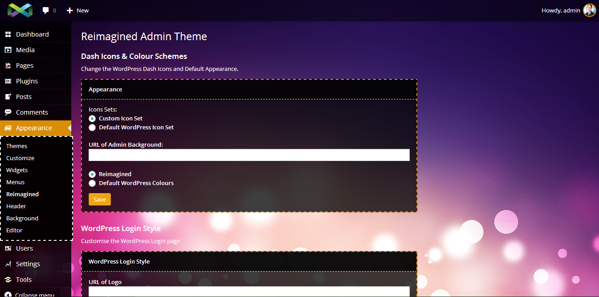
Reorder Admin Menu
To Reorder the Admin Dashboard Menu simply drag and drop the menu icon or name and place it where you want it to be.
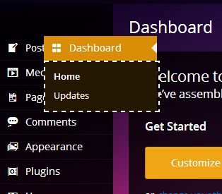
Admin Menu Dashicons
Reimagined offers the choice of using our iconset or the default WordPress iconset. Click the radio button for your preference and click save
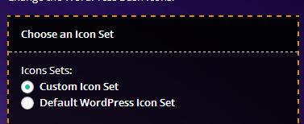
Admin Screen Background Image
To change the Admin Screen Background Image simply enter the Direct URL of the image you wish to use and click save
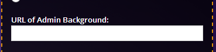
Admin Area Style
With Reimagined you have the choice of using our customized style or the default WordPress Colour Schemes
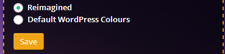
Login Screen Logo
Enter the Direct URL of the Logo you wish to use on the WordPress Login Page and click save.
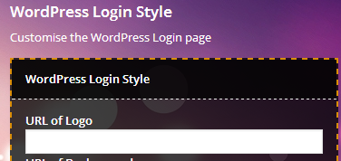
Login Screen Background
Enter the Direct URL of the Image you wish to use on the WordPress Login Page and click save.
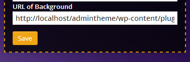
Admin Bar Logo
Enter the Direct URL of the Logo you wish to use and click save. Try and keep admin bar logo under 35px
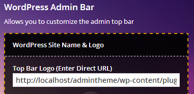
Admin Bar Link
Type in the URL that you wish to open when your admin bar logo is clicked
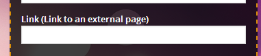
Admin Bar - Site Name
Enter Your Site Name (You also have theoption to hide the site name and just show the logo)
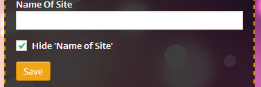
Admin Bar Quicklinks
Check the radio boxes of the items (if any) that you do not want to appear on the admin bar and click save.
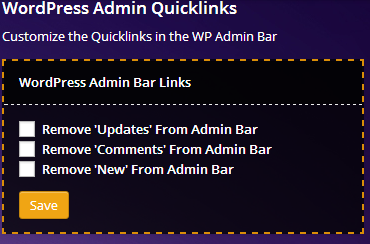
Footer Copyright
Enter your own copyright or other information (handy for whitelabelling the WP admin)
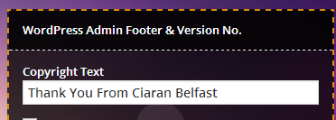
Footer Version Number
Enter your own version Number or other information (handy for whitelabelling the WP admin).
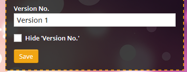
You can contact us either via Envato profile or by emailing us at support@roundmedia.co.uk